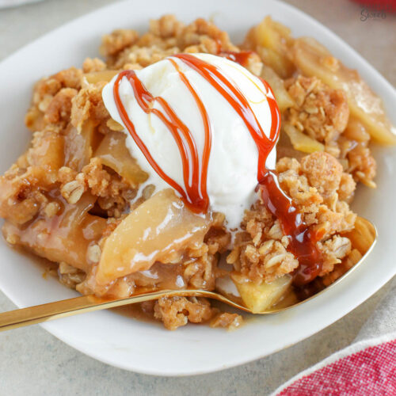

Apple Crisp

Description
If you asked me to pick my favorite fall dessert, I would say this Apple Crisp recipe. Because it’s classic.
Because it’s cozy. And because the combo of warm fruit crisp and cold vanilla ice cream gets me every single time.
Ingredients
Apples:
- 6 cups peeled and thinly sliced apples
- 3 tablespoons orange juice, apple juice or water
- 1/3 cup granulated sugar
- 2 tablespoons all purpose flour
- 3/4 teaspoon ground cinnamon
- 1 teaspoon pure vanilla extract
Topping:
- 2/3 cup all purpose flour
- 2/3 cup old fashioned oats
- 2/3 cup light brown sugar
- 1/2 teaspoon salt
- 1/2 teaspoon ground cinnamon
- 1/2 cup unsalted butter, melted
- vanilla ice cream and caramel sauce, for serving
Steps
- Preheat oven to 350°F. Grease a 9 ½ inch deep dish pie plate or 9x9 square baking dish. Set aside.
- For the topping: combine flour, oats, brown sugar, salt, and cinnamon. Add melted butter and stir until combined. Set aside.
- In a large bowl combine apples, juice, granulated sugar, flour, cinnamon, and vanilla. Stir gently until completely combined.
Dump the mixture (and any accumulated juices) into the prepared baking dish. Using your fingers, crumble the mixture over the fruit,
occasionally pressing some of it together to form clumps.
- Spray a piece of foil with nonstick spray and loosely cover the baking dish. Bake 20 minutes. Remove the foil and bake for an additional
25-30 minutes, until the topping is golden brown, the apples are tender, and the juices are bubbling around the edges. Serve warm with vanilla ice cream.
Home